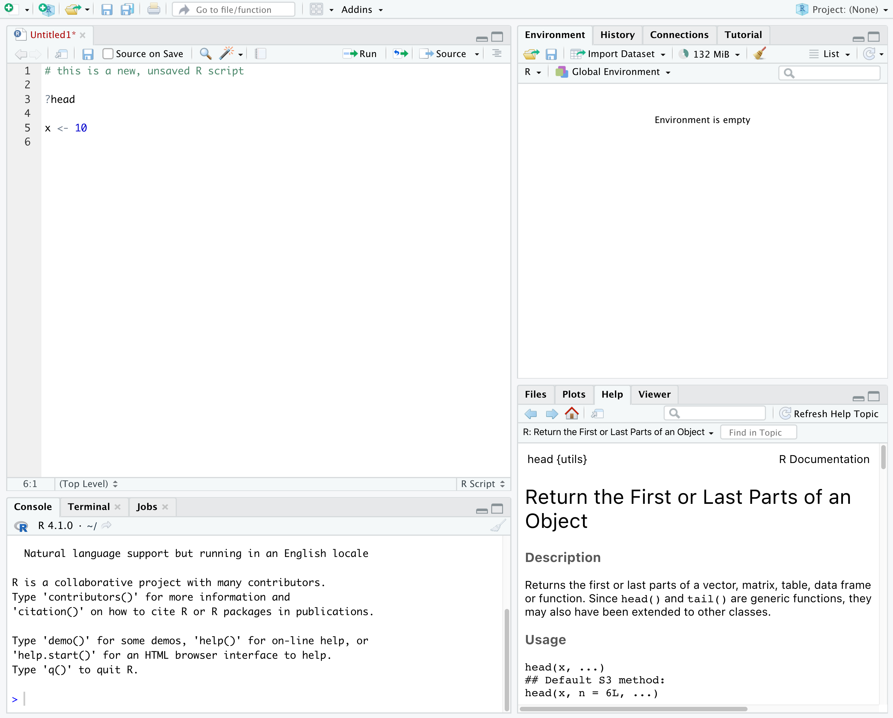
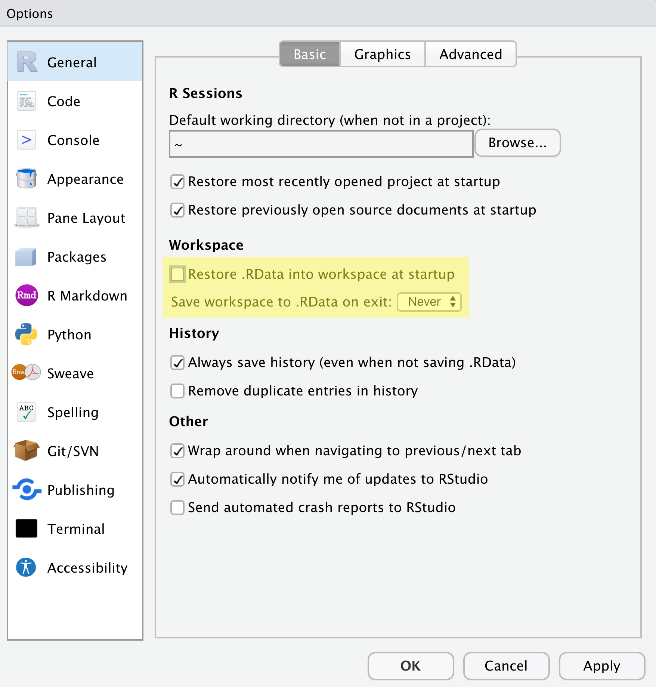
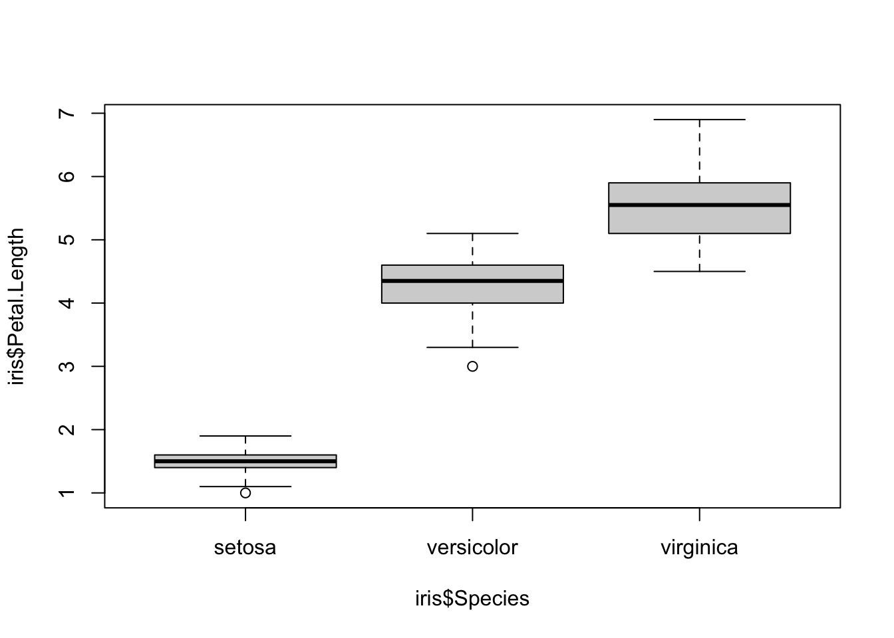
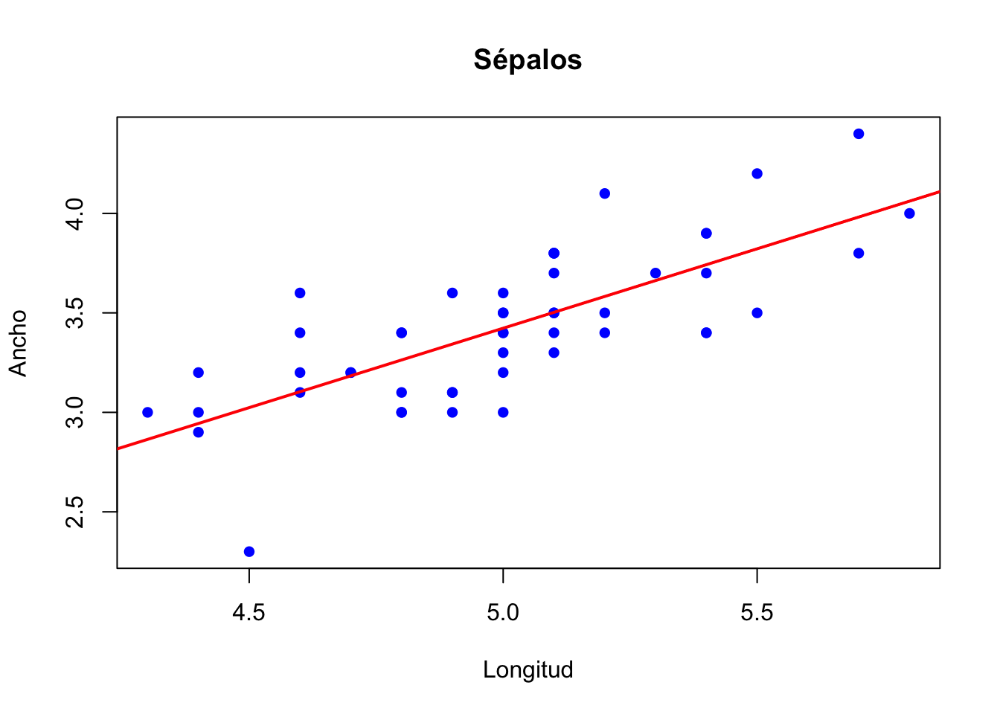

# Estructura básica para instalar paquetes (Esto es un comentario, #)
install.packages("NombrePaquete")
# Múltiples paquetes
install.packages(pkgs=c("Pkg1", "Pkg2", "Pkg3"),
dependencies = "Imports")
#Mostrar repositorios
getOption("repos")
Importante
R y Rstudio NO es lo mismo.
R es el lenguaje de programación -> Rstudio es un tipo de interfaz para R (integrated development environment o IDE)
1. Instalación
R y Rstudio para Windows
R
- Ir a CRAN Website y hacer clic en install R for the first time.
- Inmediatamente empezará la descarga (es posible hacerlo también manualmente).
- Instalar R.
Rstudio
- Ir a Posit Website y elegir la versión de Rstudio a instalar.
- Instalar Rstudio.
R y Rstudio para Mac
R
- Ir a CRAN Website y descargar el instalador(archivo pkg).
- Instalar R.
Rstudio
- Ir a Posit Website y elegir la versión de Rstudio a instalar.
- Instalar Rstudio.
Probar la instalación de Rstudio: presionar Shift+Cmd+N (Mac) o Shift+Ctrl+N (Windows)para abrir un script en blanco.

2. Paquetes
- R funciona con paquetes que permiten agregar infinidad de funciones.
- Los paquetes se encuentran disponibles en repositorios de código abierto.
- Primero instalar -> luego activar el paquete.
Luego de instalar es necesario activar el paquete a usar.
# Activar el paquete previo
library("NombrePaquete")
# Actualizar paquetes
update.packages(ask=FALSE)
Instalar desde Github/Bioconductor
- Es necesario tener
devtoolspara instalar desde Github.
if(! "devtools" %in% installed.packages())
{install.packages("devtools")}
devtools::install_github("paquete_de_github")- Bioconductor: Análisis de data genómica
#Biocmanager
if (!requireNamespace("BiocManager"))
install.packages("BiocManager")
BiocManager::install(pkgs=c("pkg1", "pkg2"))
BiocManager::install() #Actualizar paquetes3. Trabajando en R
Es mejor trabajar siempre creando proyectos independientes para asegurar que sea reproducible. Adicionalmente, es necesario mantener una configuración básica:

3.1 Directorio de Trabajo (wd, working directory)
- Dirección o ubicación (carpeta o folder) para importar/exportar/cargar/guardar archivos.
Tip
Evitar espacios, tildes o carácteres en el nombre.
Comandos útiles:
getwd(): Cuál es la dirección actual?setwd(): Definir la direccióndir(): Generar una lista de archivos y carpetas en el wd.ls(): Genera una lista de objetos abiertos en R.file.choose()
Ejemplo N1
Los comentarios dentro del código son incluidos con #.
#Ejemplo en MacOS, en Windows "C:/Docum..")
setwd("/Users/denriquez/Documents/Rstats/RepoGit/R-estudiantes")
#Comprobar el wd
getwd()
#Lista de archivos en wd
dir()3.2 Objetos
En R, toda información o data está guardada en objetos. Por lo tanto, cada Función trabaja con un tipo específico de Objetos getClassDef.
Tipos de Objetos:
Vectores: números, carácteres, fórmulas.
Matrices: varias columnas del mismo tipo y longitud.
Arrays: como Matrices pero con más dimensiones.
Data frames: clásica base de datos con columnas de diferentes tipos.
Listas: lista de objetos de diferente tipo.
Factores: Un vector con niveles.
Obj. Avanzados: S3, S4 (Listas con información interconectada). Ejemplo: plots o información genética.
3.3 Operaciones básicas
- Crear un vector (
<-o=), concatenar (c()) y mostrar resultados. *para valores repetidos:rep
Ejemplo N2
dev<-c(1,2,3,4,5,6,7,8,9,10)
dev- Características del objeto:
length(dev) #longitud
str(dev) #resumen o estructura- Otros:
class(),mode().
3.4 Operaciones básicas(II)
Ejemplo N3 - Manipular un vector.
dev[4] #Seleccionar el 4to elemento
dev[5:8] #Seleccionar del 5to al 8vo elemento.
dev2<-dev[-6] #Eliminar el 6to elemento
dev2 #Mostrar el resultado de la operación anterior
Ejemplo N4 - Crear una matriz.
dev.m<-matrix(data=11:20, nrow=2, ncol=5) #2 filas y 5 columnas
is.matrix(dev.m) # es dev.m una matriz?
dev.m #Mostrar la matriz
dim(dev.m) #dimensiones. (2 x 5)
dev.m[,3] #Mostrar la 3ra columna
dev.m[2,] #Mostrar la 2da fila
dev.m[2,3] #Mostrar un elemento con las coordenadas
Ejemplo N5 - Manipular una matriz.
dev.m[,2:4] #Mostrar valores de las columnas 2 a 4
dev1<-c(dev, dev.m[2,]) #concatenar el vector dev a la fila 2.
dev1
dev1<-c(dev.m[1,]) #reemplazar vector por la fila 1
dev1
rm(dev1) #elimina dev1
dev1<-rep(x=10, each=5) #5 repeticiones del valor 10
dev1[dev1==10]<-"diez" #Operacion logica
dev1
Ejemplo N6 - Estadísticas Básicas.
summary(dev.m) #Estadísticas básicas
Ejemplo N7 - Manipulación de Columnas
colnames(dev.m)<-c("A", "B", "C", "D", "E") #Renombrar columnas
dev.m
dev.m[,c("C","E")] #Extraer dos columnas por su nombre
t(dev.m) #Transponer elementos
Ejemplo N8 - Operaciones en matrices
dev.m2<-matrix(rep(c(1:6)), nrow=6, ncol=6)
diag(dev.m2) #diagonal de la matrix
diag(dev.m2)<-rep(x=c(1,2), times=3)
dev.m23.4 Bases de Datos (DF, data frame)
#¿Qué tipo de variable tenemos?
dev.m2<-matrix(rep(c(1:6)), nrow=6, ncol=6)
is.matrix(dev.m2)
class(dev.m2)
#Conversión a DF
dev.df<-as.data.frame(dev.m2)
class(dev.df)
dev.df[dev.df==6]<-"NA" #remplazar 6 por NA (not available)
dev.df$V6 #Acceder a la variable o ex-columna 6
Limpiar el entorno
rm(list=ls()) #limpiar todo el entorno
Guardar todos los objetos
save(list=ls(), file="prueba.RData")
#Cargar todos los objetos
load("prueba.RData")
fix() #Editar objetos
rm() #eliminar objetosR incluye un DF de prueba: iris
summary(iris) #estadísticas básicas Sepal.Length Sepal.Width Petal.Length Petal.Width
Min. :4.300 Min. :2.000 Min. :1.000 Min. :0.100
1st Qu.:5.100 1st Qu.:2.800 1st Qu.:1.600 1st Qu.:0.300
Median :5.800 Median :3.000 Median :4.350 Median :1.300
Mean :5.843 Mean :3.057 Mean :3.758 Mean :1.199
3rd Qu.:6.400 3rd Qu.:3.300 3rd Qu.:5.100 3rd Qu.:1.800
Max. :7.900 Max. :4.400 Max. :6.900 Max. :2.500
Species
setosa :50
versicolor:50
virginica :50
4. Estadísticas Básicas y Visualización
#un boxplot
boxplot(formula=iris$Petal.Length~iris$Species)
Estadísticas Básicas
#Extraer solo información de una especie
setosa<-iris[which(iris$Species=="setosa"),]
#Correlación entre 'length' y 'width'
cor.test(x=setosa$Sepal.Length, y=setosa$Sepal.Width)
Pearson's product-moment correlation
data: setosa$Sepal.Length and setosa$Sepal.Width
t = 7.6807, df = 48, p-value = 6.71e-10
alternative hypothesis: true correlation is not equal to 0
95 percent confidence interval:
0.5851391 0.8460314
sample estimates:
cor
0.7425467
Ejemplo N9 - Plot correlación entre largo y ancho
#Plot correlación entre 'length' y 'width'
plot(x=setosa$Sepal.Length, y=setosa$Sepal.Width, main="Sépalos",
xlab="Longitud", ylab="Ancho", pch=16, cex=1, col="blue")
abline(reg=lm(setosa$Sepal.Width~setosa$Sepal.Length), col="red", lwd=2)
Ejemplo N10 - Análisis de la Varianza (ANOVA)
Para usar ANOVA es necesario >2 grupos y distribuciòn normal. Ha: Existen diferencias en el tamaño del sépalo entre las 3 especies.
aov(formula=iris[["Sepal.Length"]]~iris[["Species"]])Call:
aov(formula = iris[["Sepal.Length"]] ~ iris[["Species"]])
Terms:
iris[["Species"]] Residuals
Sum of Squares 63.21213 38.95620
Deg. of Freedom 2 147
Residual standard error: 0.5147894
Estimated effects may be unbalanced